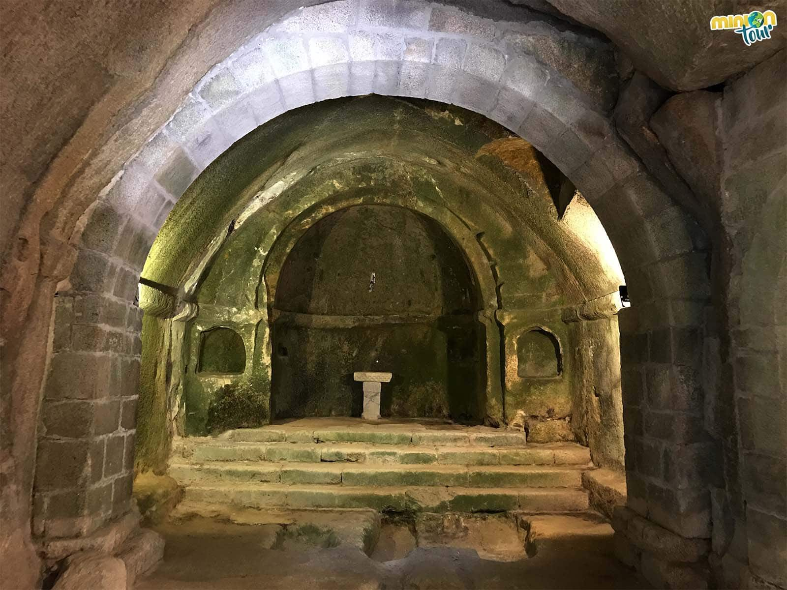
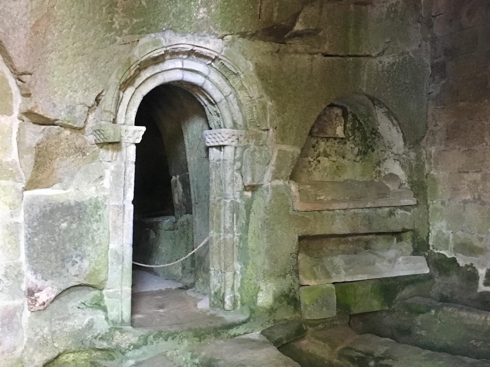
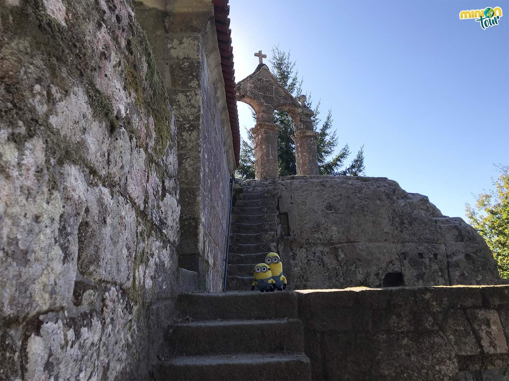

Mitos
O Mosteiro de San Pedro de Rocas




Ficha rápida
- Lugar: Esgos (Ourense)
- Que é? Un dos mosteiros cristiáns máis antigos da Península, escavado na propia rocha.
- Lenda: O cabaleiro Gemodus descubriuno mentres perseguía un xabaril e decidiu quedar a vivir alí.
- Curiosidade: Dise que baixo o mosteiro se agocha unha viga de ouro que converte en alquitrán a quen a toque.
O mito en si
Din que un cabaleiro chamado Gemodus perseguía un xabaril polo monte cando acabou atopando un lugar completamente inesperado. En vez de seguir coa caza, decidiu quedar a vivir alí. Ao final non é tan diferente do que pasa hoxe: hai quen sae unha fin de semana ao rural, namórase dun sitio e acaba mercando unha casa para restaurala. Gemodus simplemente foi un pouco máis extremo.
O lugar do que se namorou era San Pedro de Rocas, en Esgos (Ourense), un dos mosteiros cristiáns máis antigos da Península e, seguramente, un dos máis curiosos de Galicia. O especial é que está escavado directamente na rocha, como se a montaña e o mosteiro fosen unha mesma cousa.
Aínda que esa é a lenda sobre a súa orixe, sábese que o lugar xa estaba habitado moito antes por ermitáns que escolleron aquelas covas para vivir e rezar. Iso fai que a súa historia se remonte a máis de mil anos.
Pero, como adoita pasar en Galicia, a historia nunca chega soa.
Dise que baixo o mosteiro hai un túnel no que se agocha unha viga de ouro. O problema é que quen intente tocala converterase inmediatamente en alquitrán. Non sei quen foi o primeiro en inventar esa historia, pero recoñezo que é unha boa maneira de evitar que a xente se poña a buscar tesouros.
Outra das lendas fala da chamada pinga, un suposto método de tortura no que unha gota de auga caía constantemente sobre a cabeza dunha persoa ata facela perder a razón. Non hai probas de que realmente acontecese alí, pero a historia segue formando parte do imaxinario do mosteiro.
Creo que iso é o que máis me gusta de San Pedro de Rocas. Non é só un lugar bonito nin un mosteiro antigo. É deses sitios nos que parece que cada pedra ten unha historia detrás. E canto máis les sobre el, máis difícil resulta separar o que realmente pasou do que a xente leva séculos contando.
Bibliografía
Padilla, A. (2021, 1 marzo). Viajar, ver, encontrar. EL MONASTERIO DE SAN PEDRO DE LAS ROCAS (Esgos. Ourense).
https://www.viajarverencontrar.com/2021/01/el-monasterio-de-san-pedro-de-las-rocas.html